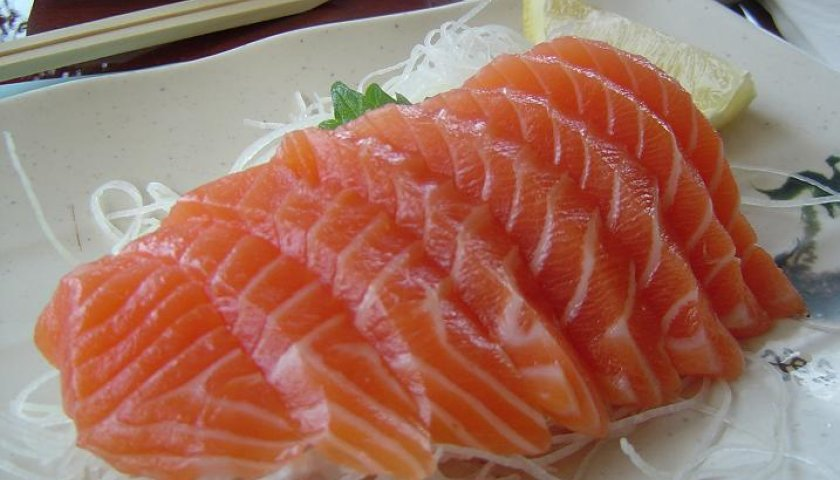

Salmon Sashimi

Preparation
Slice salmon fish into thin slices (sashimi style, about ¼ inch thick or your preference). Slices should be rectangular shape. This also works for tuna sashimi and spicy salmon sashimi.
Sauces
- Soy Sauce: Low sodium or regular soy sauce will be work./li>
- Wasabi: You can buy pre-made wasabi paste at many grocery stores or online. You can also buy wasabi powder which is my favorite because it tastes fresher and more potent. Just add water to the wasabi powder and you have the awesome wasabi that you get in Japanese restaurants. You can also store the wasabi powder in the refrigerator for future use.
- Lemon Juice (Optional): A fresh squeeze of lemon juice brightens this dipping sauce and works well with the fattiness of the salmon.